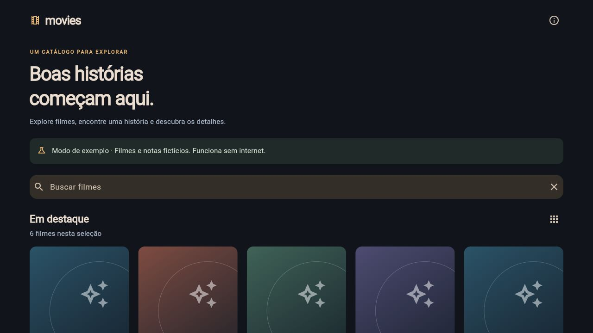
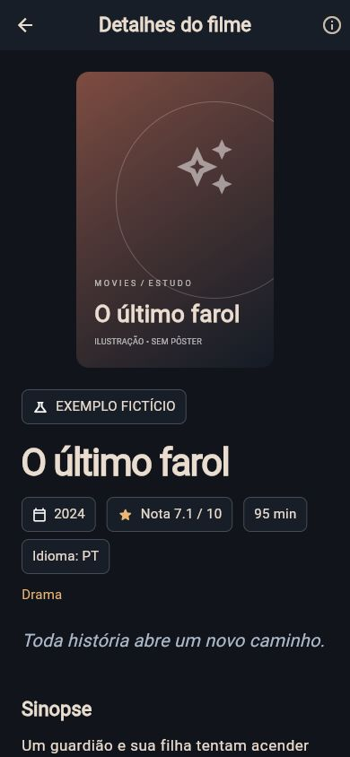

Como transformar a resposta de uma API em uma interface que continua compreensível quando a internet falha, a imagem não existe ou a busca anterior termina depois da nova? Vamos construir esse caminho com um catálogo de filmes em Flutter. O objetivo é aprender a separar dados, acesso à API, estado e apresentação, verificando cada parte antes de juntá-las.
Estas são as notas de aula do professor Kleber de Oliveira Andrade, revisadas em 17 de novembro de 2026. É útil conhecer classes, listas e widgets básicos de Dart. Vamos explicar Future, await e a validação nas fronteiras durante o percurso. Ao final, há exatamente cinco exercícios, com critérios para conferir o resultado.
Esta edição usa Flutter 3.50.0 estável e Dart 3.14.0. Confira a versão antes de instalar os pacotes. Você pode usar uma instalação separada do SDK ou FVM; nesse caso, use os comandos pelo SDK selecionado para este projeto, sem substituir o Flutter dos seus outros aplicativos.
git clone https://github.com/kleberandrade/movies-flutter.git cd movies-flutter flutter --version flutter pub get --enforce-lockfile flutter run -d chrome
O modo padrão é uma demonstração local: doze filmes, notas e ilustrações fictícios em assets/fixtures/movies.json. Não há consulta autenticada ao TMDB nessa experiência. Assim, a turma pode estudar navegação, busca e paginação sem criar conta, expor um token ou depender da disponibilidade da API.
Experimente: busque “farol”, abra O último farol e confira os detalhes. Volte, limpe o campo, altere a densidade dos cartões e toque em Carregar mais filmes. Pesquise “xyz” para observar a mensagem de lista vazia. Depois abra Sobre e créditos e confira a identificação dos dados de exemplo.

O catálogo acima é uma captura real do aplicativo compilado para Web. Os filmes são exemplos locais, e a ilustração usada quando não há pôster é identificada como tal.
Este é o trecho atual do pubspec.yaml. O pubspec.lock registra as versões exatas resolvidas; mantê-lo no Git permite que outra pessoa e o CI instalem o mesmo conjunto.
environment:
sdk: '>=3.14.0 <4.0.0'
flutter: '>=3.50.0'
dependencies:
flutter:
sdk: flutter
dio: ^5.11.1
flutter_svg: ^2.4.0
cupertino_icons: ^2.0.0
material_ui: ^1.11.1
dev_dependencies:
flutter_test:
sdk: flutter
flutter_lints: ^6.0.0
dio 5.11.1 faz as requisições HTTPS e permite injetar um adaptador nos testes. flutter_svg 2.4.0 desenha o logotipo oficial usado nos créditos. cupertino_icons 2.0.0 fornece os ícones dos controles adaptativos. material_ui 1.11.1 contém os componentes Material atuais. flutter_lints 6.0.0 orienta a análise estática; flutter_test acompanha o SDK Flutter 3.50.0.
No Flutter 3.50, a biblioteca de design Material foi separada do núcleo. Os widgets deste projeto importam:
import 'package:material_ui/material_ui.dart';
Não misture tipos Material da biblioteca antiga com os do pacote novo. A orientação oficial de migração explica a mudança. O projeto não precisa de dartz; intl 0.20.3 agora aparece como dependência transitiva da nova biblioteca de interface, e não como uma dependência direta para formatar a data do filme.
A auditoria atual confirma todas as dependências diretas nas versões mais recentes disponíveis. Há três limites transitivos: o SDK fixa material_color_utilities 0.13.0 e test_api 0.7.14; o compilador SVG limita xml a 7.0.1, sua versão auditada. Existem, respectivamente, 0.13.1, 0.7.15 e 7.1.0, mas elas estão fora desses limites. Não usamos dependency_overrides para contornar as restrições dos mantenedores. Consulte a auditoria completa e repita flutter pub outdated ao planejar outra atualização.
lib/ main.dart domain/movie.dart data/movie_repository.dart state/catalog_controller.dart ui/catalog_screen.dart ui/detail_screen.dart ui/components.dart
Leia essa estrutura como um caminho: a pessoa interage com a tela; a tela pede uma operação ao controlador; o controlador consulta o repositório; o repositório converte os dados externos em valores Movie ou MoviePage. Quando o estado muda, a tela é reconstruída. Nenhum widget precisa interpretar JSON ou configurar o cabeçalho HTTP.
Domínio: o que caracteriza um filme válido? Repositório: de onde vêm o catálogo e os detalhes? Controlador: qual busca e qual página estão valendo agora? Widgets: como comunicar dados, carregamento, erro e ausência de resultados? Essa divisão permite testar a regra e o estado sem abrir um navegador ou consultar a API real.
Abra lib/domain/movie.dart. Os campos de Movie são imutáveis. O parser aceita nota inteira ou decimal, reconhece informações opcionais ausentes e rejeita identidade, nota, data, duração ou caminho de imagem inválidos. Dessa forma, uma resposta inesperada não circula pelo aplicativo como se fosse válida.
O exemplo completo abaixo também está em example/parse_movie.dart. Você pode executá-lo com dart run example/parse_movie.dart:
import 'package:movies/domain/movie.dart';
void main() {
final movie = Movie.fromJson({
'id': 1,
'title': 'Exemplo local',
'vote_average': 8,
'poster_path': null,
'release_date': '',
});
print(
'${movie.title} • ${movie.rating.toStringAsFixed(1)}/10 • ${movie.year}',
);
}
A saída esperada é Exemplo local • 8.0/10 • Sem data. Observe dois detalhes: o número 8 foi convertido para double, e uma data vazia continua ausente. Não inventamos a data de hoje para preencher uma informação que não veio. O ponto de interrogação em DateTime? e String? representa justamente essa possibilidade de ausência.
MoviePage também valida a forma da lista e a paginação. Uma resposta com zero páginas totais não pode conter filmes. Essa regra teve um teste escrito antes da correção: ele falhou com o parser permissivo e passou depois da validação. O importante é observar o erro esperado, não apenas produzir um arquivo chamado “teste”.
A interface abaixo, de lib/data/movie_repository.dart, é o contrato usado pelo restante do aplicativo. O trecho referencia Movie e MoviePage do domínio; ele não inclui toda a implementação do arquivo.
abstract interface class MovieRepository {
bool get isDemo;
Future<MoviePage> catalog({int page = 1, String query = ''});
Future<Movie> detail(int id);
}
Future<MoviePage> representa uma página que chegará depois; await aguarda seu resultado antes de usar os dados. DemoRepository lê as fixtures locais, procura pelo título e entrega seis filmes por página. TmdbRepository usa Dio e os endpoints populares, busca e detalhes. As telas recebem uma instância pela construção, em vez de criarem clientes HTTP escondidos dentro de seus widgets.
No cliente real, os timeouts são valores Duration, conforme a API do Dio 5. Este trecho corresponde à configuração da conexão; a tradução das falhas permanece no repositório completo:
BaseOptions(
baseUrl: 'https://api.themoviedb.org/3',
connectTimeout: const Duration(seconds: 10),
receiveTimeout: const Duration(seconds: 10),
headers: {
'Authorization': 'Bearer ${token.trim()}',
'Accept': 'application/json',
},
)
O token nesse trecho é o parâmetro recebido por TmdbRepository, nunca um valor que deva ser escrito no código público. As consultas usam parâmetros separados, como queryParameters, para preservar espaços e caracteres como “&” na busca. O parser transforma a resposta em modelos antes de entregá-la ao controlador.
Erros de autenticação, limite de consultas, filme inexistente, timeout e falta de conexão se tornam MovieFailure com uma mensagem compreensível. O aplicativo não apresenta o corpo bruto de um erro do servidor. Uma falha no modo real também não troca silenciosamente os resultados por filmes fictícios: a origem continua explícita.
Imagine digitar “farol” e logo depois “órbita”. A primeira requisição pode terminar por último. Se qualquer resposta puder substituir a lista, a tela exibirá filmes da busca antiga. CatalogController usa uma geração: somente a operação que ainda pertence à busca atual pode publicar seu resultado.
Veja o método real de início de busca, dentro da classe CatalogController:
Future<void> search(String value) async {
query = value.trim();
final generation = ++_generation;
_movies = [];
_page = 0;
_total = 1;
await _fetch(generation);
}
Ao digitar, a tela invalida imediatamente a geração anterior e espera 350 ms antes de enviar a nova busca. Isso é o debounce: reduz requisições sem deixar uma resposta antiga assumir o estado durante a espera. Requisições já enviadas continuam existindo, mas seus resultados obsoletos são ignorados. O mesmo cuidado evita atualizações depois de dispose.
Carregar a próxima página segue outras regras: enquanto uma página está carregando, outro pedido igual é ignorado; IDs repetidos são combinados; uma falha preserva os filmes já vistos; tentar novamente solicita a mesma página que falhou. Ao chegar ao total de páginas, o botão deixa de oferecer novas consultas. O limite da API é de 500 páginas.
Esses comportamentos são verificados em test/catalog_controller_test.dart, com futuros controlados pelo próprio teste. Assim podemos completar a busca antiga depois da nova de propósito, em vez de torcer para uma rede lenta reproduzir o problema.
A tela de catálogo usa uma grade responsiva e um botão de paginação explícito. TextField chama o início da busca; ListenableBuilder observa o controlador; os cartões navegam para DetailScreen passando o ID. Os detalhes têm sua própria consulta e uma nova tentativa independente quando ela falha.

Captura real dos detalhes na Web em largura de celular. O rótulo EXEMPLO FICTÍCIO identifica a origem dos dados; ano, nota, duração, idioma e gênero são metadados de leitura, não caixas de seleção.
Antes de pensar em efeitos visuais, confira quatro situações: a consulta ainda não terminou; terminou sem resultados; falhou; ou retornou dados. O indicador de carregamento tem descrição semântica. O vazio sugere outra busca. O erro oferece Tentar novamente. Pôster ausente ou com falha usa uma ilustração local identificada, sem ocultar o título do filme.
Na revisão da interface, os testes reproduziram um overflow com texto a 200%; o cabeçalho e a altura da grade foram ajustados. A inspeção real do navegador também mostrou metadados sendo anunciados como controles selecionáveis; eles foram substituídos por marcadores de texto. Acessibilidade envolve nomes, papéis e tamanho de texto, além de contraste e cor.
TMDB é uma base colaborativa com API, dados, imagens e marca sujeitos a condições próprias. Consulte a documentação inicial, a autenticação e os termos e requisitos de atribuição. A pessoa titular da conta deve revisar os termos e obter seu próprio API Read Access Token.
Copie config/example.json para config/local.json, que é ignorado pelo Git, e configure:
{
"DEMO_MODE": "false",
"TMDB_TOKEN": "SEU_PROPRIO_READ_ACCESS_TOKEN"
}
flutter run -d chrome --dart-define-from-file=config/local.json
O cliente usa HTTPS, Authorization: Bearer e o idioma pt-BR. O catálogo usa /3/movie/popular; a busca, /3/search/movie; os detalhes, /3/movie/{id}. O modo de exemplo permanece a escolha padrão, mesmo que exista um token, até você selecionar explicitamente o modo real.
Configuração externa evita versionar a credencial, mas não a transforma em segredo dentro de um aplicativo distribuído: tokens compilados em Web ou mobile podem ser extraídos. Para produção, mantenha credenciais em um backend autenticado sob sua responsabilidade. O token antigo que já apareceu no histórico precisa ser revogado pelo seu titular; removê-lo do código atual não o remove de commits antigos.
O diálogo Sobre inclui o logotipo oficial e a atribuição obrigatória: This product uses the TMDB API but is not endorsed or certified by TMDB. A licença MIT do código não relicencia dados, imagens ou marcas de terceiros. Nesta revisão, a integração autenticada real não foi executada; os testes de rede usam um adaptador Dio determinístico.
flutter pub get --enforce-lockfile dart format --output=none --set-exit-if-changed lib test example flutter analyze --no-pub flutter test --no-pub --concurrency=1 --coverage dart run example/parse_movie.dart flutter build web --no-pub --release --no-web-resources-cdn python3 -m http.server 8784 --directory build/web --bind 127.0.0.1
Abra http://127.0.0.1:8784. A suíte tem 23 testes de parsing, serviço, estado e widgets: fixtures, parâmetros de autenticação e busca, HTTP 401/403/404/429/500, timeout, conexão, paginação, deduplicação, navegação, vazio, retry e texto ampliado. O exemplo do artigo também foi executado. Cobertura gerada não significa cobertura total; não anunciamos um percentual que não foi medido.
O CI repete instalação com lockfile, formatação, análise, testes e build Web com Flutter 3.50.0. Compilar um APK ou um aplicativo para simulador não equivale a testar em um telefone. O registro de validação separa resultados atuais, resultados históricos e verificações não realizadas.
O código completo continua no repositório original Movies. As notas históricas de 2020 preservam imagens, vídeos, referências e exercícios da primeira edição. Para executar a versão atual, use os comandos e as versões desta edição.
Como apoio conceitual, permanecem os vídeos API — Dicionário do Programador, do Código Fonte TV e Repository Pattern no Flutter, do balta. Eles são materiais de terceiros: confira suas próprias datas e versões ao estudar trechos de código.
Leitura recomendada da edição original: BERNARDO, Letícia Ellen. Cine Collection: um aplicativo para recomendações de filmes. Monografia de Tecnologia em Análise e Desenvolvimento de Sistemas, Fatec Americana / Centro Paula Souza, 2017.